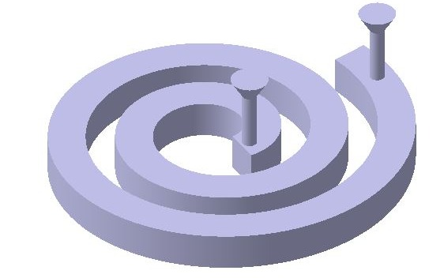
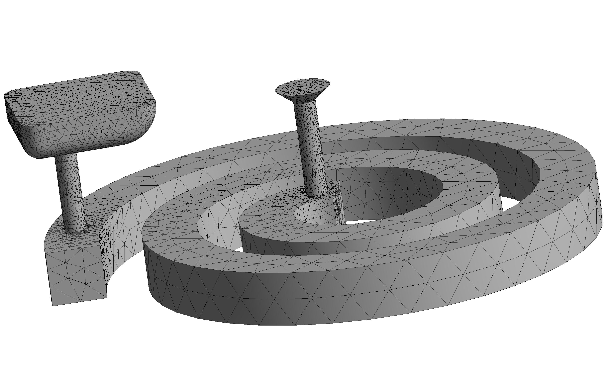
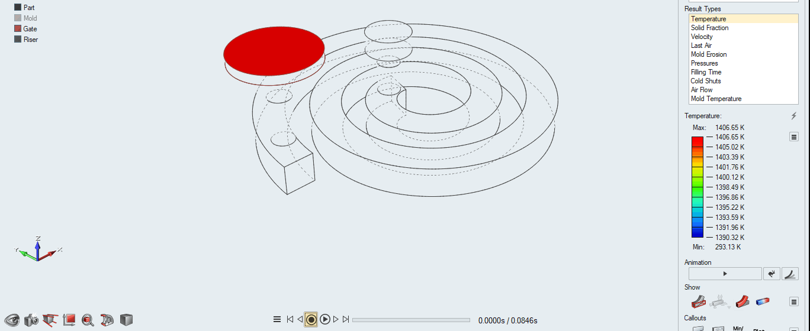
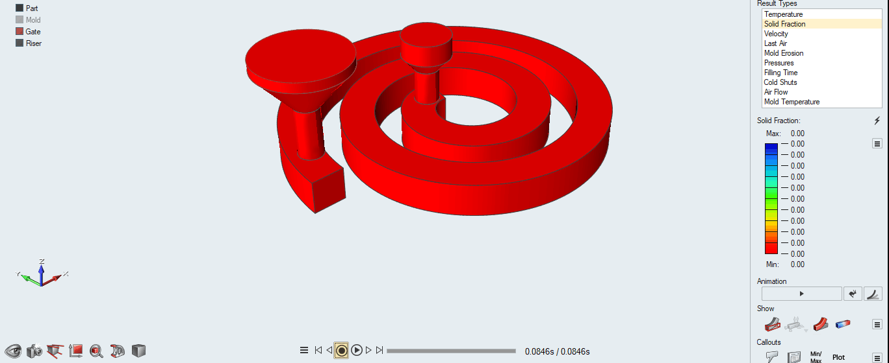
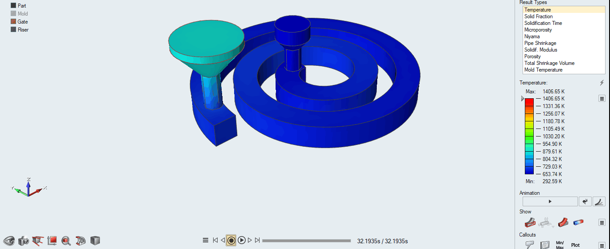
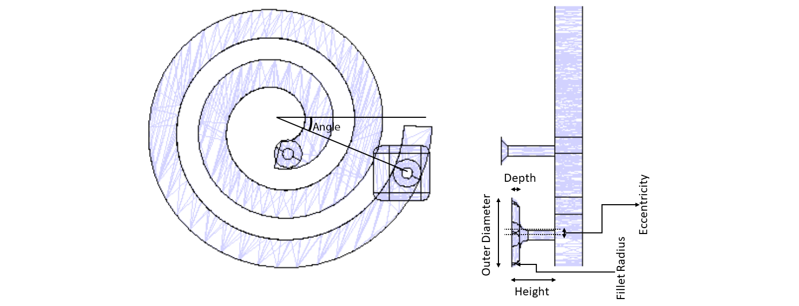
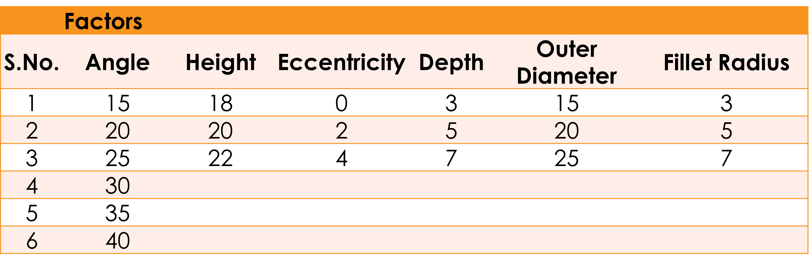

Investment Casting
Investment casting, a precision manufacturing method, produces complex metal parts with fine details. It involves creating a wax pattern, encasing it in ceramic, melting the wax, and pouring molten metal into the mold. This process ensures intricate shapes and is used in industries where precision is required. Altair Inspire Cast is a simulation software tailored for casting processes. It aids engineers in optimizing casting designs by predicting potential defects like porosity, shrinkage, and flow issues. By simulating and analyzing these factors, it enables efficient and cost-effective production of high-quality metal components in industries.


Computational Model
Meshing of the Model


Temperature variation during Filling
Liquid Fraction variation during Filling


Temperature variation during Solidification
Liquid Fraction variation during Solidification
Design of Experiments (DOE)
A Design of Experiments (DOE) study involves systematically planning and conducting experiments to gather data in an efficient and structured manner. Its purpose is to explore relationships between variables, optimize processes, or make informed decisions based on empirical evidence. In this case, we have considered six factors and one output variable. Those six factors are: Angle, Height, Eccentricity, Depth, Outer Diameter and Fillet Radius. The output selected here is the time taken for solidification of the material.
An L18 orthogonal matrix is constructed using Taguchi Design to conduct DOE using Minitab 18.0 software. The levels considered
for this scenario are shown below in the image. On completing the Taguchi design using the table shown below, we obtain a combination of
the factors and their levels. Then, simulations are done for those combinations and the significant factors are found on completing
Taguchi Analysis to the finalized orthogonal array. Regression modelof Multiple Linear Regression was implemented on the orthogonal matrix.
Further, an optimization study was conducted to obtain the ideal conditions to obtain the fastest solidification with less defects during
the casting. The optimization results denote that, the significant factors affecting the solidification time are: Height, eccentricity, depth and outer diameter.
The optimized values of these significant factors are 18mm, 4mm, 3mm and 25mm respectively.
